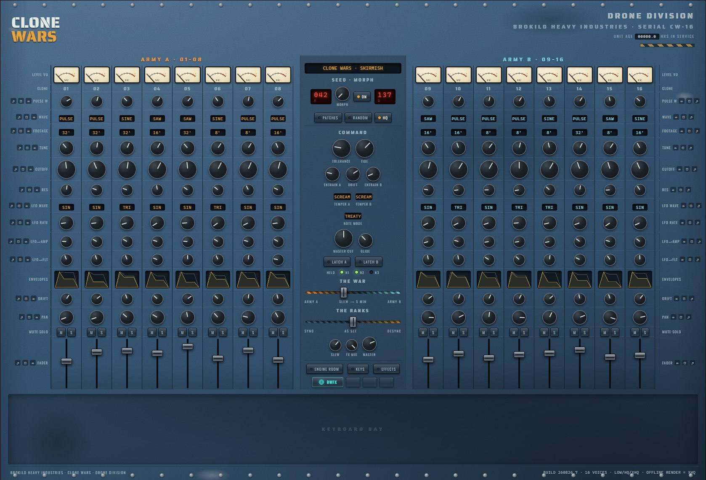
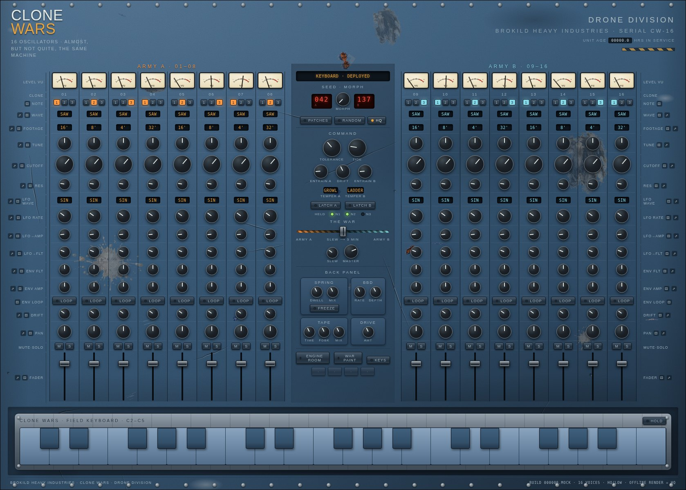

Sixteen analogue clones of almost, but not quite, the same oscillator — drawn up in two armies, and slid into battle with one fader.
A drone monster in war-torn blue-painted metal. Sixteen complete voices — each with its own analogue-modelled oscillator, filter, LFO and looping envelopes — stand in two armies of eight around a command column. TOLERANCE scatters their components so no two clones agree, ENTRAIN pulls each army into step, TIDE conducts over minutes, and THE WAR crossfades the armies over anything from fifty milliseconds to five minutes. Three-note voicing, seed patches in five families with continuous morphing, spring · tape · BBD · drive on the back panel — and a hull that scars with use and remembers its age in your DAW project.

Every great analogue drone has the same secret: many voices that are supposed to be identical, and are not. Clone Wars builds the disagreement on purpose.
One knob spreads component values across the sixteen clones — filter, envelope and LFO all wander from spec, deterministically, from the unit's own serial.
Each oscillator wanders slowly around its pitch at its own pace. Sixteen of them beating together is the sound the machine is built for.
Turn it up and the clones of an army pull into phase like oscillators sharing a power rail — the beating slows, thickens, and locks.
A random walk moving over minutes that leans on the whole orchestra at once, so a held chord swells and recedes with nobody touching anything.
The armies can carry two entirely different sounds — different waves, footages, filters, even different filter circuits.
Each army has its own filter temper: GROWL, a Sallen-Key voice with diode squash that keeps its bass; SCREAM, the same circuit pushed until it howls on its own harmonics; or LADDER, a round four-pole transistor ladder with saturation in every stage. THE WAR fader crossfades the two armies equal-power — and its SLEW stretches the fader's travel up to five minutes, so a single drag becomes a slow campaign. Below it sits THE RANKS: a sync/desync slider that pulls every continuous control toward its army's average (hard left is sixteen perfect copies) or exaggerates the differences (hard right is full mutiny) — non-destructively, so centre always returns your exact patch. Give Army A a 32-foot LADDER abyss and Army B a screaming four-foot swarm, park the war in the middle, and the machine plays a duet with itself.
A seed number is a patch: generated from the number alone, bit-identical on every machine, forever.
The command column carries two red LED seed numbers, A and B, and a MORPH knob that glides the entire console — all sixteen strips, tempers, effects — continuously between them. The PATCHES menu browses the seed families: abyss (the bottom of the ocean), swarm (a field of insects with opinions), engines (a hull under power), cathedral (sacred space in a box) and rust (beautiful decay). RANDOM deals a fresh one. Tell a friend a seed number and they hold your exact drone.
There is an odometer in the top right corner — UNIT AGE, in hours of service. While the unit plays, it ages. And as it ages, it scars.
Dings, chips, paint peel, rust breakthrough and fingerprints accumulate on the panel with use — photographic damage, placed deterministically from the unit's own serial, so your scars are yours and stay exactly where they fell. Age and damage are saved per instance, inside the DAW project: the Clone Wars in your old project is old; the one you added today is factory fresh. There is no off switch. Shift-click the odometer and the SERVICE BAY opens: REPAIR restores factory condition and restarts the clock, TOUR simulates a year of hard touring right now.

The ENGINE button cycles three render tiers for the nonlinear stages, where aliasing is born.
| Tier | What it means |
|---|---|
| LOW | No oversampling — the full sixteen-clone console at minimum CPU, for sketching on a laptop with the fans off. |
| HQ | Nonlinearities run 2× oversampled. The default, transparent for everything short of the most violent SCREAM settings. |
| XHQ | 4× oversampled — the measured aliasing floor of the engine. |
Two minutes. There is no installer — a VST3 plugin is a folder you copy into place.
Clone Wars.vst3 folder,
a standalone Clone Wars.exe, the manual and a readme.Clone Wars.vst3 folder — not just the file inside
it — into C:\Program Files\Common Files\VST3\. Windows will ask for
administrator permission; that is normal.| Requirement | Detail |
|---|---|
| System | Windows 10 or 11, 64-bit |
| Build | 260825.6 — shown in the ABOUT hatch (click the nameplate) |
| Format | VST3 instrument, stereo out, MIDI in. A standalone application is in the same zip. |
| Voices | 16 clones · two armies · three note slots with per-clone voicing |
| Sample rates | Any. Tested at 44.1, 48, 88.2 and 96 kHz. |
| Hosts | Any VST3 host — developed against Ableton Live 12 |
| Price | Free. No account, no registration, no telemetry. |